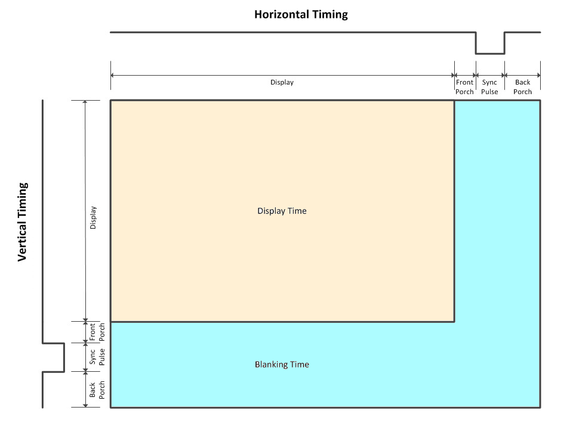
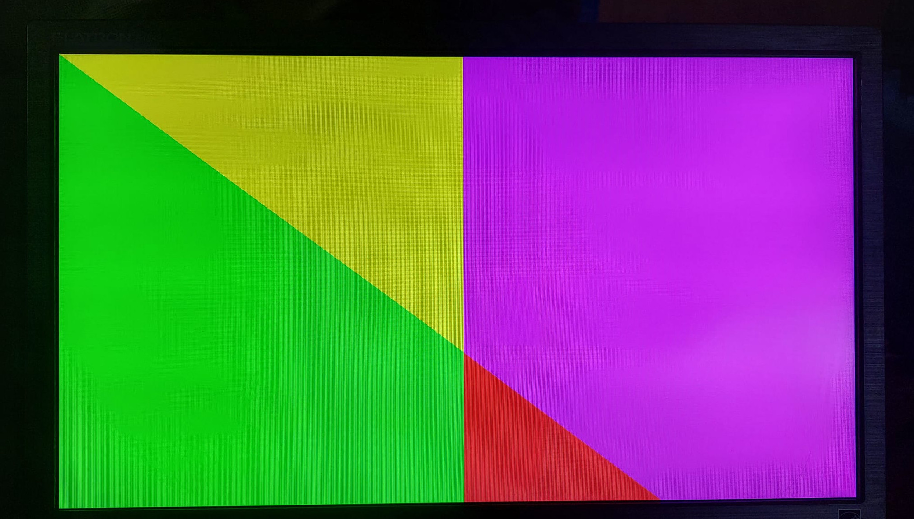
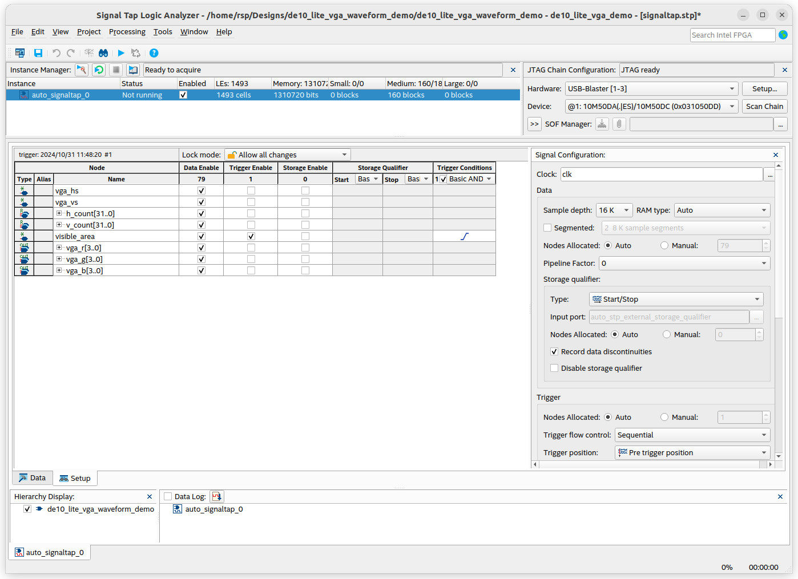
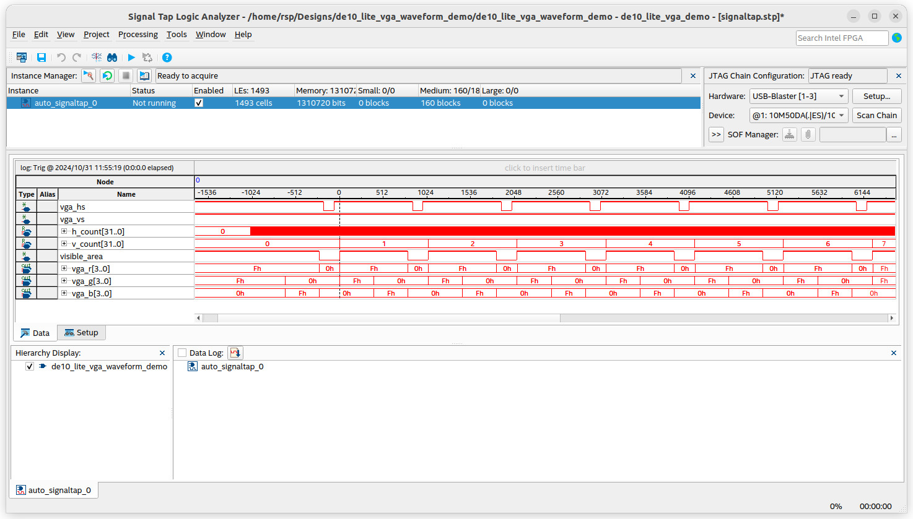
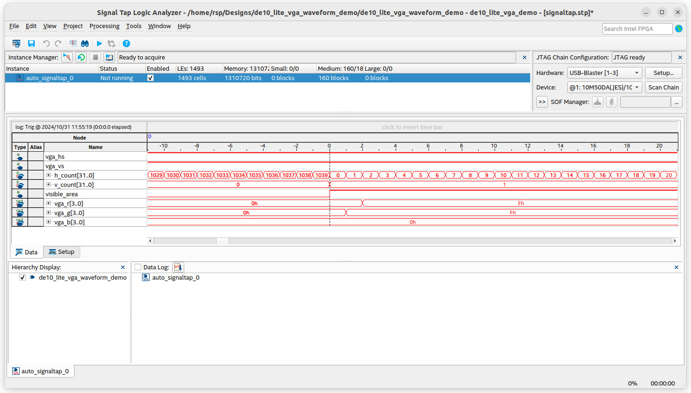

การสร้างสัญญาณเอาต์พุตสำหรับ VGA Display#
Keywords: VGA, Intel / Altera MAX 10 FPGA, DE10-Lite FPGA Board
ความรู้และทักษะพื้นฐานที่เกี่ยวข้อง
- อิเล็กทรอนิกส์ (Electronics): วงจรเครือข่ายตัวต้านทาน (Resistor Network) และการใช้งาน VGA DAC
- การออกแบบวงจรลอจิก (Logic Design): วงจรตัวนับ การสร้างสัญญาณแอนะล็อกและดิจิทัลสำหรับ VGA
- การวัด (Measurement): การใช้ Signal Tap Logic Analyzer และการตั้งค่า Trigger Conditions
- การเขียนโค้ดและการใช้ซอฟต์แวร์ (Software/Coding): การเขียนโค้ดด้วย VHDL และการใช้งานซอฟต์แวร์ Intel Quartus Prime (Lite Edition)
▷ การสร้างสัญญาณสำหรับจอภาพ VGA#
VGA (Video Graphics Array) เป็นมาตรฐานการส่งข้อมูลกราฟิกสำหรับจอมอนิเตอร์แบบ CRT หรือจอภาพแบบ LCD แต่ในปัจจุบันมีการใช้งานมาตรฐาน VGA น้อยลง และถูกแทนที่ด้วยมาตรฐานอื่น เช่น DVI-D และ HDMI
VGA ทำงานโดยการสแกนสัญญาณทีละเส้นจากซ้ายไปขวา (Horizontal Scan) และจากบนลงล่าง (Vertical Scan) ผ่านการทำงานร่วมกันระหว่างสัญญาณ RGB, HSYNC และ VSYNC
สัญญาณที่ใช้สำหรับ VGA มีดังนี้
- สัญญาณดิจิทัล Horizontal Sync (HSYNC): เป็นสัญญาณพัลส์แบบ Active-Low ใช้กำหนดช่วงเวลาในการสแกนเส้นแนวนอนแต่ละเส้นบนจอภาพ
- สัญญาณดิจิทัล Vertical Sync (VSYNC): เป็นสัญญาณพัลส์แบบ Active-Low ใช้กำหนดช่วงเวลาในการสแกนเฟรมใหม่ เริ่มจากด้านบนสุดของจอภาพ
- สัญญาณแอนะล็อกสำหรับสีแดง สีน้ำเงิน และสีเขียว (RGB): กำหนดค่าสีสำหรับแต่ละพิกเซล เช่น ถ้าใช้ 4 บิต สำหรับแต่ละสี (R,G,B) ก็จะได้ 16^3 = 4096 สี แต่ถ้าใช้ 8 บิต ก็จะได้ 256^3 = 16,777,216 สี ที่ใช้ในการแสดงผลแต่ละพิกเซลได้
ข้อกำหนดในเชิงเวลา (Signal Timing Spec) สำหรับ VGA มีความสำคัญในการแสดงผลภาพให้ถูกต้องตามมาตรฐาน VGA โดยแบ่งเป็นข้อกำหนดเชิงเวลาสำหรับแนวนอนและแนวตั้ง
Horizontal Timing (แนวนอน) เป็นการสแกนแต่ละเส้นจากซ้ายไปขวา มีการแบ่งช่วงเวลาตามลำดับดังนี้:
- Horizontal Visible Area (Active Video): เป็นช่วงเวลาที่แสดงผลพิกเซลจริงในแต่ละเส้น (Line)
- Front Porch: เป็นช่วงเวลาหลังการแสดงผลของเส้นแต่ละเส้น และก่อนถึงสัญญาณพัลส์ HSYNC
- Horizontal Sync (HSYNC Pulse, Active-Low): ช่วงเวลาที่ให้สัญญาณเพื่อบอกให้เริ่มเส้นถัดไปในจอภาพ
- Back Porch: ช่วงเวลาหลัง HSYNC ที่ไม่แสดงผล ใช้เพื่อให้เวลาในจอภาพเตรียมพิกเซลใหม่
Vertical Timing (แนวตั้ง) การกำหนดเฟรมจากบนลงล่าง มีการแบ่งช่วงและลำดับดังนี้:
- Vertical Visible Area (Active Video): เป็นช่วงเวลาที่แสดงผลพิกเซลจริงของเฟรมในแนวตั้ง
- Front Porch: เป็นช่วงเวลาหลังจากการแสดงผลทุกเส้น ก่อนถึงสัญญาณพัลส์ VSYNC
- Vertical Sync (VSYNC Pulse, Active-Low): สัญญาณที่บอกให้เริ่มเฟรมใหม่ตั้งแต่ด้านบนของจอภาพ
- Back Porch: ช่วงเวลาหลัง VSYNC ที่ไม่แสดงผล ใช้เพื่อให้เวลาจอภาพเตรียมการแสดงผลเฟรมใหม่

รูป: การแบ่งช่วงสัญญาณตามข้อกำหนดของ VGA Timing Spec
ตัวอย่าง VGA Timing Spec ที่มีความละเอียด 640x480 @ 60Hz
| Timing Parameter | Horizontal (Pixels) | Vertical (Lines) |
|---|---|---|
| Active Video | 640 | 480 |
| Front Porch | 16 | 10 |
| **Sync Pulse ** | 96 | 2 |
| Back Porch | 48 | 33 |
| Total Period | 800 | 525 |
การทำงานของ VGA 640x480 @ 60Hz จะใช้ความถี่ 25.175MHz (Pixel Clock)
- อัตราการอัปเดตเฟรม (Frame refresh rate): 60 Hz
- ความถี่ของพิกเซล (Pixel frequency): 25.175 MHz (800 pixels * 525 lines * 60 Hz = 25.20 Mpixels/s)
ตัวอย่าง VGA Timing Spec ที่มีความละเอียด 800x600 @ 72Hz
| Timing Parameter | Horizontal (Pixels) | Vertical (Lines) |
|---|---|---|
| Active Video | 800 | 600 |
| Front Porch | 56 | 37 |
| Sync Pulse | 120 | 6 |
| Back Porch | 64 | 23 |
| Total Period | 1040 | 666 |
- อัตราการอัปเดตเฟรม (Frame refresh rate): 72 Hz
- ความถี่ของพิกเซล (Pixel frequency): 50 MHz (1040 pixels * 666 lines * 72 Hz = 49.87 Mpixels/s)
▷ การใช้งาน VGA สำหรับบอร์ด Terasic DE10-Lite FPGA#
บอร์ด FPGA อย่างเช่น Terasic DE10-Lite FPGA มีวงจรและคอนเนกเตอร์สำหรับการเชื่อมต่อสัญญาณ VGA ดังนั้นจึงสามารถนำไปใช้งานได้อย่างสะดวก และมีผังวงจรบางส่วนดังนี้

รูป: วงจรตัวต้านทานและคอนเนกเตอร์ D-Sub (15-pin) สำหรับ VGA
จากผังวงจร จะเห็นได้ว่า มีการใช้ตัวต้านทานแบบ R-2R DAC ในการแปลงสัญญาณดิจิทัล 4 บิต ให้เป็นสัญญาณแอนะล็อก สำหรับแต่ละสี (R,G,B)
ถัดไปเป็นโค้ด VHDL เพื่อสาธิตการสร้างสัญญาณ VGA ขนาด 800x600 พิกเซล
และใช้สัญญาณ Clock เท่ากับ 50MHz ซึ่งสามารถใช้กับบอร์ด DE10-Lite ได้
โดยไม่ต้องใช้วงจร ALTPLL (PLL: Phase-Locked Loop)
เพื่อสร้างสัญญาณความถี่อื่น และใช้งานภายในชิป FPGA
ในตัวอย่างนี้มีการใช้สัญญาณ h_count กับ v_count สำหรับตัวนับแนวนอน และตัวนับแนวตั้ง ตามลำดับ
และจะมีการตรวจสอบในระหว่างการนับ เพื่อกำหนดช่วงเวลาและสร้างสัญญาณพัลส์
vga_hs (HSYNC) และ vga_vs (VSYNC) เป็นเอาต์พุต ตามลำดับ
และมี vga_r, vga_g และ vga_b เป็นสัญญาณเอาต์พุต ขนาด 4 บิต
วงจรนี้สาธิตการกำหนดค่าสี RGB (อย่างละ 4 บิต รวม 12 บิต) ให้แต่ละพิกเซล
โดยพิจารณาจากค่าของตัวนับ h_count และ v_count สำหรับค่าในแกน x และ y ตามลำดับ
การกำหนดค่าสี RGB จะเกิดขึ้นเมื่อสัญญาณ visible_area=1 (Active Video)
แต่ถ้ามีค่า visible_area=0 จะให้ RGB มีค่าเป็น 0 ทั้งหมด (Blank)
-- DATE: 2024-10-31
LIBRARY IEEE;
USE IEEE.STD_LOGIC_1164.ALL;
USE IEEE.NUMERIC_STD.ALL;
ENTITY de10_lite_vga_demo IS
PORT (
clk : IN STD_LOGIC; -- 50MHz clock input
reset_n : IN STD_LOGIC; -- active-low asynchronous reset
vga_hs : OUT STD_LOGIC; -- VGA Hsync output
vga_vs : OUT STD_LOGIC; -- VGA Vsync output
vga_r, vga_g, vga_b : OUT STD_LOGIC_VECTOR(3 DOWNTO 0) -- 4-bit R,G,B
);
END de10_lite_vga_demo;
ARCHITECTURE behavioral OF de10_lite_vga_demo IS
-- VGA timing constants (see: http://www.tinyvga.com/vga-timing)
CONSTANT H_ACTIVE_AREA : INTEGER := 800;
CONSTANT V_ACTIVE_AREA : INTEGER := 600;
-- Horizontal timing
CONSTANT H_FRONT_PORCH : INTEGER := 56;
CONSTANT H_SYNC_PULSE : INTEGER := 120;
CONSTANT H_BACK_PORCH : INTEGER := 64;
CONSTANT H_TOTAL : INTEGER
:= H_ACTIVE_AREA + H_FRONT_PORCH + H_SYNC_PULSE + H_BACK_PORCH;
-- Vertical timing
CONSTANT V_FRONT_PORCH : INTEGER := 37;
CONSTANT V_SYNC_PULSE : INTEGER := 6;
CONSTANT V_BACK_PORCH : INTEGER := 23;
CONSTANT V_TOTAL : INTEGER
:= V_ACTIVE_AREA + V_FRONT_PORCH + V_SYNC_PULSE + V_BACK_PORCH;
CONSTANT CENTER_Y : INTEGER := V_ACTIVE_AREA / 2;
CONSTANT CENTER_X : INTEGER := H_ACTIVE_AREA / 2;
-- Internal signals for counters
SIGNAL h_count, v_count : INTEGER := 0;
SIGNAL visible_area : STD_LOGIC := '0';
SIGNAL vga_clk : STD_LOGIC := '0'; -- VGA clock
SIGNAL hsync, vsync : STD_LOGIC := '1';
BEGIN
vga_clk <= clk; -- Use 50MHz clock for VGA pixel clock
vga_sync_proc : PROCESS (vga_clk, reset_n)
BEGIN
IF reset_n = '0' THEN
h_count <= 0;
v_count <= 0;
ELSIF rising_edge(vga_clk) THEN
-- Horizontal counter
IF h_count = H_TOTAL - 1 THEN
h_count <= 0;
-- Vertical counter
IF v_count = V_TOTAL - 1 THEN
v_count <= 0;
ELSE
v_count <= v_count + 1;
END IF;
ELSE
h_count <= h_count + 1;
END IF;
END IF;
END PROCESS;
-- Generate Hsync pulse (combinatioral)
hsync <= '0' WHEN (h_count >= H_ACTIVE_AREA + H_FRONT_PORCH
AND h_count < H_ACTIVE_AREA + H_FRONT_PORCH + H_SYNC_PULSE)
ELSE '1';
-- Generate Vsync pulse (combinatioral)
vsync <= '0' WHEN (v_count >= V_ACTIVE_AREA + V_FRONT_PORCH
AND v_count < V_ACTIVE_AREA + V_FRONT_PORCH + V_SYNC_PULSE)
ELSE '1';
-- Determine if the current pixel is in the visible area
visible_area <= '1' WHEN (h_count < H_ACTIVE_AREA
AND v_count < V_ACTIVE_AREA) ELSE '0';
PROCESS (vga_clk)
BEGIN
-- Update Hsync & Vsync outputs synchronized with the pixel clock
IF rising_edge(vga_clk) THEN
vga_hs <= hsync;
vga_vs <= vsync;
END IF;
END PROCESS;
-- Simple waveform drawing demo
PROCESS (vga_clk)
VARIABLE r_value : STD_LOGIC_VECTOR(3 DOWNTO 0);
VARIABLE g_value : STD_LOGIC_VECTOR(3 DOWNTO 0);
VARIABLE b_value : STD_LOGIC_VECTOR(3 DOWNTO 0);
BEGIN
IF rising_edge(vga_clk) THEN
r_value := "0000";
g_value := "0000";
b_value := "0000";
IF visible_area = '1' THEN
-- Use the h_count and v_count values to the set RGB value
IF h_count < v_count THEN
IF h_count < H_ACTIVE_AREA/2 THEN
r_value := "0000";
g_value := "1111";
b_value := "0000";
ELSE
r_value := "1111";
g_value := "0000";
b_value := "0000";
END IF;
ELSE
IF h_count < H_ACTIVE_AREA/2 THEN
r_value := "1111";
g_value := "1111";
b_value := "0000";
ELSE
r_value := "1111";
g_value := "0000";
b_value := "1111";
END IF;
END IF;
END IF;
-- Update the RGB output
vga_r <= r_value;
vga_g <= g_value;
vga_b <= b_value;
END IF;
END PROCESS;
END behavioral;
ไฟล์ Tcl Script สำหรับการตั้งค่าเพื่อเลือกใช้ขา I/O ของ MAX 10 FPGA บนบอร์ด DE10-Lite มีดังนี้
#set_global_assignment -name DEVICE 10M50DAF484C7G
#set_global_assignment -name FAMILY "MAX 10"
set_instance_assignment -name IO_STANDARD "3.3-V LVTTL" -to *
set_instance_assignment -name IO_STANDARD "3.3 V Schmitt Trigger" -to reset_n
set_location_assignment PIN_P11 -to clk
set_location_assignment PIN_B8 -to reset_n
set_location_assignment PIN_P1 -to vga_b[0]
set_location_assignment PIN_T1 -to vga_b[1]
set_location_assignment PIN_P4 -to vga_b[2]
set_location_assignment PIN_N2 -to vga_b[3]
set_location_assignment PIN_W1 -to vga_g[0]
set_location_assignment PIN_T2 -to vga_g[1]
set_location_assignment PIN_R2 -to vga_g[2]
set_location_assignment PIN_R1 -to vga_g[3]
set_location_assignment PIN_AA1 -to vga_r[0]
set_location_assignment PIN_V1 -to vga_r[1]
set_location_assignment PIN_Y2 -to vga_r[2]
set_location_assignment PIN_Y1 -to vga_r[3]
set_location_assignment PIN_N3 -to vga_hs
set_location_assignment PIN_N1 -to vga_vs
ไฟล์สำหรับกำหนด Timing Spec สำหรับสัญญาณ Clock
# Synopsys design constraints file (.sdc)
# timing spec for clocks signals
# the main clock of 50MHz (period = 20 ns)
create_clock -name clk -period 20.0 [get_ports clk]
# derived clock with a period of 20 ns
create_generated_clock -name vga_clk -source [get_ports clk] \
-divide_by 1 [get_ports vga_clk]

รูป: หน้าจอ LCD แสดงผลที่ได้จากการกำหนดค่าสีให้พิกเซล
การทดสอบการทำงานของวงจร จะต้องใช้สัญญาณ VGA จากบอร์ด DE10-Lite นำไปต่อกับจอภาพ LCD ที่รองรับการใช้งาน VGA ได้
คำแนะนำ: หากต้องการนำสัญญาณ VGA ไปใช้กับจอภาพแบบ HDMI ก็สามารถใช้อุปกรณ์เสริม ที่เป็นตัวแปลงสัญญาณ VGA ให้เป็นสัญญาณ HDMI ได้
นอกจากนั้น การใช้ Signal Tap IP Core เป็นอีกหนึ่งตัวช่วยในการวิเคราะห์การทำงานของวงจร ตามตัวอย่างการใช้งานต่อไปนี้

รูป: การตั้งค่าการใช้งาน Signal Tap

รูป: ตัวอย่างสัญญาณที่ได้จากการทำงานของ Signal Tap

รูป: ตัวอย่างสัญญาณที่ได้จากการทำงานของ Signal Tap เมื่อซูมขยายสัญญาณ
การตั้งค่าทริกเกอร์ (Trigger) สำหรับ Signal Tap ในตัวอย่างนี้ เป็นดังนี้
ทริกเกอร์จะเกิดขึ้นเมื่อสัญญาณ visible_area เปลี่ยนจาก 0->1 หรือ เกิดขอบขาขึ้น
▷ กล่าวสรุป#
บทความนี้ได้นำเสนอตัวอย่างการเขียนโค้ด VHDL เพื่อสร้างสัญญาณดิจิทัล และนำไปใช้สำหรับการแสดงผลบนจอภาพแบบ VGA ขนาด 800 x 600 พิกเซล โดยได้ทดลองใช้กับบอร์ด Terasic DE10-Lite (MAX 10 FPGA) และสาธิตการสร้างรูปคลื่นสัญญาณสามเหลี่ยมบนจอภาพ
บทความที่เกี่ยวข้อง
This work is licensed under a Creative Commons Attribution-ShareAlike 4.0 International License.
Created: 2024-10-31 | Last Updated: 2024-11-01